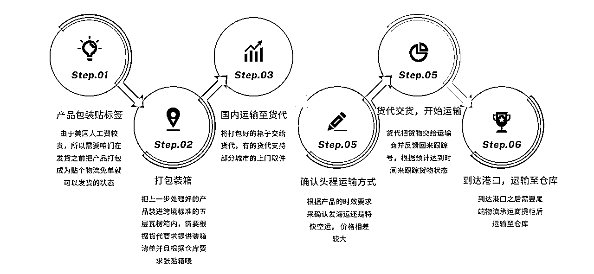

来源：https://ivvygw9y2ti.feishu.cn/docx/BRxadb2N0otfWTx4BUacwItsnzb
各位生财的兄弟们见贴欢喜，我是七喜。
前面帖子有写到，我一直在做temu，从5月份开始重心也跟着平台转移到了美区的半托管。到现在也过去了六个多月，目前订单及回款基本稳定，这期间踩过了N多个坑， 有的坑甚至会直接将我们打击到爬不起来，现在将这些分享出来，希望能帮助一部分人避免踩到这些坑。
本篇文章主要为大家分享下关于头程部分的经验
在本篇正文开始前，通过下图来帮助大家了解下海外备货的整体流程

上图中第一【产品包装及贴标签】是根据海外仓库的要求来做的
货代就是货运代理人，来负责将咱们托寄的物品运输到海外的指定地址。
目前货代非常多，有自营头程的，也有做中间商的，国际运输公司就那么几家，美森，ups，FedEx等，所以大部分货代也是把货物交给他们来承运的,关于货代选择要注意以下几点
咱们发过去的产品，想要使用货代的服务的,要对比价服务的单价,避免出现大额账单，大概分为以下几种
有部分货代支持运费的账期，例如货物到达海外地址签收后付费或者是固定账期例如次月支付，可以有效缓解下资金成本
正所谓货物已经交代了别人手上就由不得自己了，所以大家在选择货代时一定要多对比几家
说到装箱大家肯定会认为这有什么好避坑的，把产品装到箱子里面封好发过去不就行了，其实并不然，在国内也许是这样，毕竟咱们的产品要运输到美国去，要经过美国人的手把咱们的产品交付到买家手里，那么这个事情就没有这么简单了。下面咱们一一解释不简单在哪里。
1、标准尺寸：最长边不超过100CM，第二边长不超过76CM，周长不超过260CM。周长计算方法：长+[2 x(宽+高）] 。
2、单件重量不超过22KG；UPS单箱计费重为最低12KG，不足12KG按照12KG计费。
3、单箱收费重未达到12KG，按照12KG计费；单票收费重不足21KG，按照21KG计费。
根据选择的渠道不同，海关检查拒收的产品也不同，比如液体、手铐等等， 所以在发货前一定要跟货代确认好箱内产品选择合适的渠道。如果被检查出来货物中有违规的产品轻则被退货到货代，严重的还会把货代的账号封禁。
根据选择的海外仓不同，每一家要求的箱内包含的sku种类也不同，有的要求五种，有的三种，还有的要求一种， 这个在发货前需要跟仓库确认好。避免因为产品种类过多导致不给上架等问题。
这里要着重交代下，一定要选择质量好超硬的纸箱，避免在运输途中被暴力运输造成破损导致丢件。
箱内产品数量一定要清点好之后交给货代及仓库，包括箱子重量等一定要有记录，避免丢件之后扯皮。
头程渠道的选择主要是考虑两个因素: 时效和价格
头程分为船运和空运，船运大都是美森来承运，分为美森正班和美森加班,正班和加班主要是发船周期的区别,
船运的到货周期大概是: 美东25-30天，美西 17-22天左右，上下会有些许浮动
空运的周期大概是3-5天，不同的清关地区时效也有区别
12月8号， 船运运费在17/kg，空运特快ups大概73/kg，时效快了很多,价格也贵了很多，运费比产品价值要高
以上就是本次分享的关于头程部分的避坑，下一篇文章是关于海外仓选择的避坑，海外仓部分我们经历了仓库爆仓丢货，强制要求我们移仓， 仓库园区着火封禁导致一周发不出货等等问题，这些都会在下文中跟大家详聊！
我是七喜，一起生财有术！